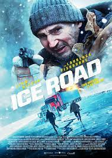

ICE ROAD
The movie star is Liam Neeson, age allowed is 16pg
An ice road, also called ice bridge, is a human-made structure that runs on a frozen water surface (a river, a lake or a sea water expanse). Ice roads are typically part of a winter road, but they can also be simple stand-alone structures, connecting two shorelines. Ice roads may be planned, built and maintained so as to remain safe and effective, and a number of guidelines have been published with information in these regards. An ice road may be constructed year after year, for instance to service community needs during the winter,. It could also be for a single year or two, so as to supply particular operations, such as a hydroelectric project or offshore drill sites